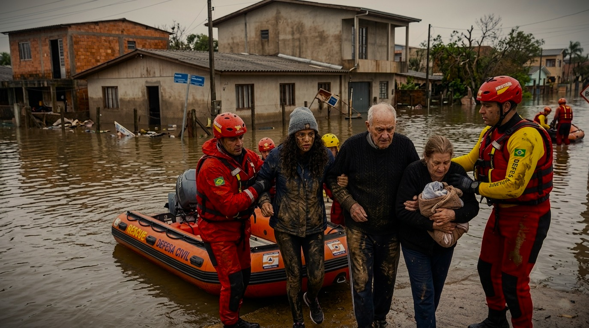
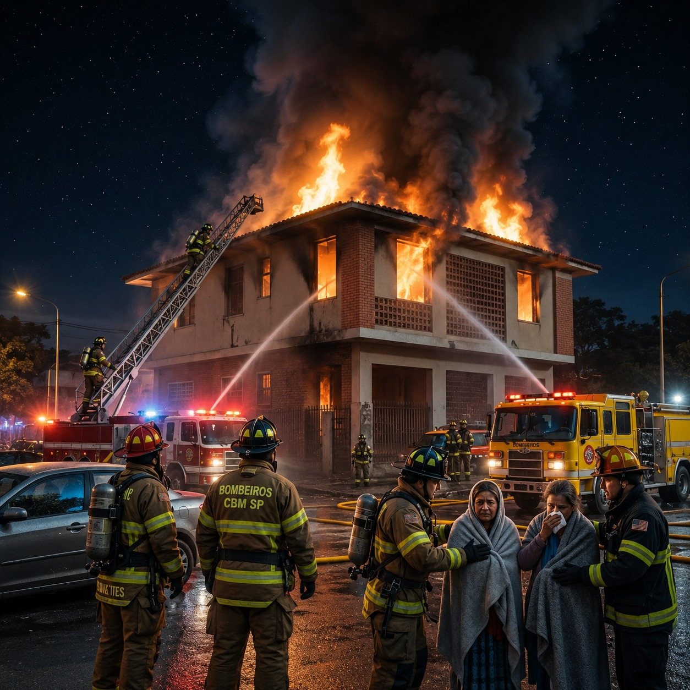
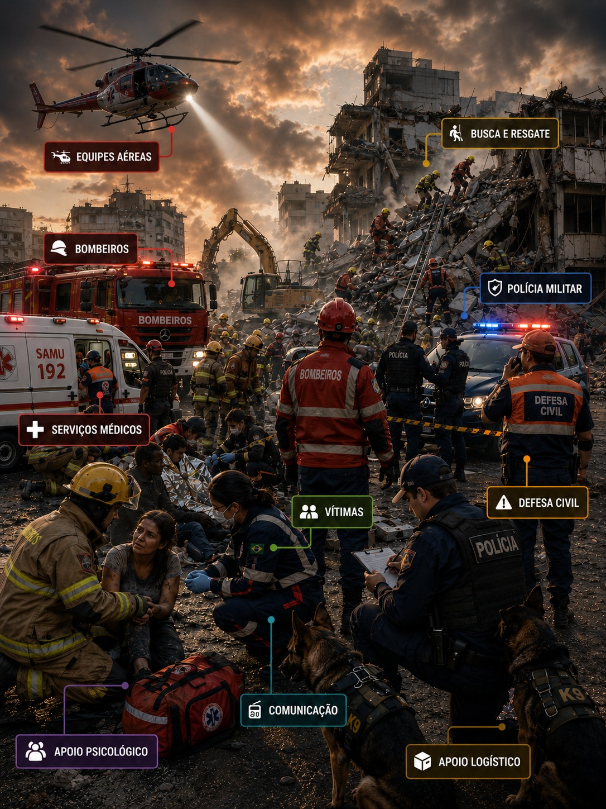

Comunicação de emergência que funciona quando tudo para - sem celular, sem internet, sem luz.
Quando uma enchente, desabamento ou incêndio acontece, a infraestrutura de comunicação cai junto. Vítimas não conseguem pedir socorro, equipes de resgate não sabem aonde ir e a Defesa Civil coordena ações às cegas.
O DisasterLink é um sistema de comunicação de emergência criado para resolver exatamente esse problema. A solução é composta por um kit físico portátil, um painel de comando para a Defesa Civil e um aplicativo para as equipes de resgate. O kit usa rádio LoRa para receber sinais de socorro das vítimas e envia as informações via 4G ou, quando este falha, via satélite Iridium, garantindo comunicação em qualquer lugar do planeta, independente de infraestrutura terrestre.
Em 2024 no Rio Grande do Sul, municípios inteiros ficaram dias sem comunicação.

Seis módulos. Uma mochila. Pronto para operar.
Projetado para implantação rápida em campo. Qualquer pessoa pode transportar, montar e ativar o sistema em poucos minutos, sem treinamento técnico especializado.
Processa dados em tempo real, coordena todos os módulos e executa o software de monitoramento e resposta.
ProcessamentoUtiliza automaticamente a melhor operadora disponível para transmitir dados, localização e alertas em tempo real.
ConectividadeCria uma rede local independente entre kits, garantindo comunicação. Alcance de até 5 km para envio de alertas SOS.
Rádio LocalCanal de contingência que mantém o sistema operacional quando não há cobertura celular, em qualquer lugar do planeta.
EmergênciaFornece coordenadas exatas do kit e das vítimas, permitindo rastreamento contínuo e resposta mais rápida.
LocalizaçãoAté 48 horas de funcionamento contínuo, com recarga automática por painel solar de 20 W.
EnergiaOs principais objetivos do DisasterLink são:
Mantém a comunicação ativa entre vítimas, equipes de resgate e centros de comando mesmo após a queda das redes convencionais.
Transforma pedidos de socorro em informações acionáveis, enviando localização e nível de urgência para as equipes responsáveis.
Automatiza o fluxo de comunicação para que alertas cheguem à Defesa Civil em minutos, mesmo em cenários críticos.
Continua funcionando sem energia elétrica, internet ou cobertura celular, utilizando energia autônoma e comunicação redundante.
Quem é diretamente beneficiado pela solução DisasterLink.

Moradores de áreas sujeitas a enchentes e deslizamentos.
Bombeiros e SAMU que precisam de dados precisos para agir rápido.
Coordenadores com visão em tempo real para distribuir recursos.
Unidades que recebem alertas de emergência médica automaticamente.
Por que o DisasterLink é a solução certa para emergências.
Mantém vítimas, equipes de resgate e centros de comando conectados mesmo quando redes celulares e internet deixam de funcionar.
Envia pedidos de socorro com localização em tempo real, permitindo que as equipes priorizem atendimentos e reduzam o tempo de resposta.
Funciona de forma autônoma com energia solar, comunicação redundante e proteção contra água e condições extremas.
Cabe em uma mochila, pode ser montado por qualquer pessoa e possui baixo custo de implementação para municípios e organizações humanitárias.
O fluxo completo do desastre ao resgate em 5 passos simples.
Um evento como enchente, deslizamento ou incêndio destrói torres de celular, cabos de fibra e fornecimento de energia, deixando comunidades completamente isoladas e sem nenhum meio de comunicação.
A vítima solicita ajuda por dois canais:
1. Conectando ao WiFi do kit e preenchendo um formulário em menos de 30 segundos, sem instalar aplicativo.
2. Pressionando o botão SOS físico - 2 cliques para socorro geral ou 3 cliques para emergência médica - com alcance de até 5 km sem celular ou bateria.
O kit registra a localização GPS e a urgência do pedido e tenta o envio via 4G em menos de 10 segundos. Se não houver sinal, comuta automaticamente para o satélite Iridium, garantindo a entrega em até 3 minutos em qualquer ponto do território nacional.
Os dados chegam ao painel da Defesa Civil, que exibe em tempo real um mapa com a localização e o nível de urgência de cada vítima. Emergências médicas e vítimas sem resposta há mais de 30 minutos disparam alertas automáticos via WhatsApp com coordenadas e link do mapa.
A equipe de campo acessa um aplicativo com as vítimas ordenadas por urgência e as rotas de acesso a cada uma. O app funciona completamente offline, sincronizado previamente, permitindo atuação mesmo em áreas sem nenhum sinal.